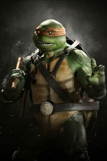

C'est le plus joyeux des quatre frères.
Il est toujours prêt à s'amuser et à défendre ses amis, même si cela signifie prendre des risques.
Son nom vient du peintre et sculpteur italien Michel-Ange.
Dans le dessin animé de 2012, il est amoureux d’April O’Neil.
Il porte un bandeau orange et utilise deux Nunchakus pour arme.